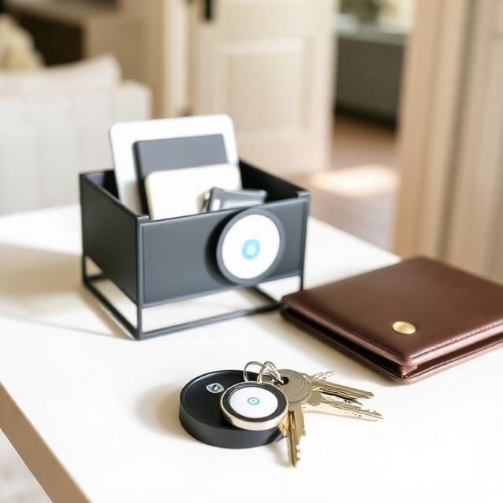

Esky RF Item Locator
A nice choice if you do not want to depend on an app and prefer a simple remote-style finder.
- No app required
- Very straightforward to understand
- Good if you like simple gadgets
When people lose their keys, they are not browsing for inspiration. They want a fix now. The best solution is a small system: one tracker, one obvious drop zone, and one backup that matches how you live.

The fastest fix for most people is an Apple AirTag. It is easy to understand, easy to trust, and solves the exact panic people feel when their keys disappear.
Keys go missing when they are allowed to land in too many temporary places: jacket pockets, counters, bags, cup holders, and random flat surfaces. A good setup does not just help you find keys after the fact. It reduces the chance of losing them in the first place.
Most people try random solutions. What works better is one smart tracker plus one visible home base. That combination solves the panic problem and the habit problem at the same time.
A nice choice if you do not want to depend on an app and prefer a simple remote-style finder.

A simple wall mount can make a big difference if your keys never seem to land in the same place twice.

A good pick if you want a dedicated drop zone that helps your entryway feel calmer and more put together.
Get an AirTag and a wall key holder. That pairing covers both major failure points: finding keys after they disappear and keeping them from wandering in the first place.
| Product | Best for | What it helps with | Why people like it |
|---|---|---|---|
| Apple AirTag | Fastest overall fix | Finding keys quickly | Simple, trusted, and easy to use |
| Tile Mate | Lower-cost tracker option | Everyday backup tracking | Good alternative if you want a more budget-friendly tracker |
| Esky RF Item Locator | No-app simplicity | Simple remote-based finding | Easy to understand if you do not want an app |
| Lwenki Key Holder Wall Mount | Daily habit fix | Keeping keys in one visible place | Cheap, practical, and easy to install |
| Umbra Trigg Organizer | Entryway system builder | Creating a drop zone for small essentials | Makes the entryway feel more organized |